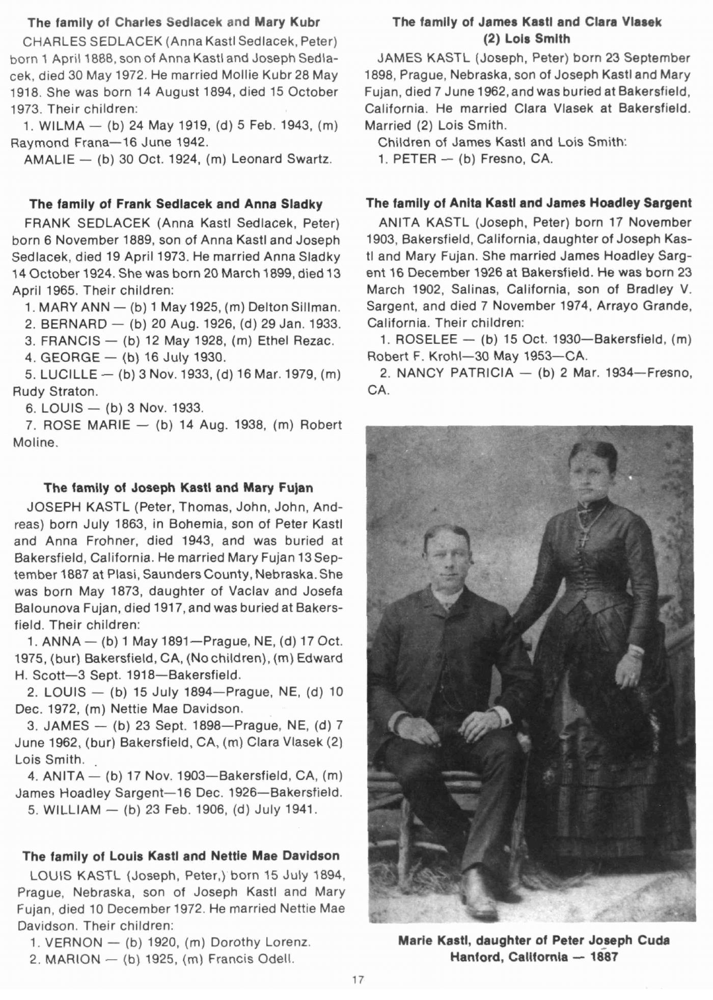

The book · The Family of Peter Kastl
Page 17 The family of Charles Sedlacek and Mary Kubr


Transcription
The family of Charles Sedlacek and Mary Kubr
CHARLES SEDLACEK (Anna Kastl Sedlacek, Peter) born 1 April 1888, son of Anna Kastl and Joseph Sedlacek, died 30 May 1972. He married Mollie Kubr 28 May 1918. She was born 14 August 1894, died 15 October 1973. Their children:
- WILMA — (b) 24 May 1919, (d) 5 Feb. 1943, (m) Raymond Frana—16 June 1942.
AMALIE — (b) 30 Oct. 1924, (m) Leonard Swartz.
The family of Frank Sedlacek and Anna Sladky
FRANK SEDLACEK (Anna Kastl Sedlacek, Peter) born 6 November 1889, son of Anna Kastl and Joseph Sedlacek, died 19 April 1973. He married Anna Sladky 14 October 1924. She was born 20 March 1899, died 13 April 1965. Their children:
- MARY ANN — (b) 1 May 1925, (m) Delton Sillman.
- BERNARD — (b) 20 Aug. 1926, (d) 29 Jan. 1933.
- FRANCIS — (b) 12 May 1928, (m) Ethel Rezac.
- GEORGE — (b) 16 July 1930.
- LUCILLE — (b) 3 Nov. 1933, (d) 16 Mar. 1979, (m) Rudy Straton.
- LOUIS — (b) 3 Nov. 1933.
- ROSE MARIE — (b) 14 Aug. 1938, (m) Robert Moline.
The family of Joseph Kastl and Mary Fujan
JOSEPH KASTL (Peter, Thomas, John, John, Andreas) born July 1863, in Bohemia, son of Peter Kastl and Anna Frohner, died 1943, and was buried at Bakersfield, California. He married Mary Fujan 13 September 1887 at Plasi, Saunders County, Nebraska. She was born May 1873, daughter of Vaclav and Josefa Balounova Fujan, died 1917, and was buried at Bakersfield. Their children:
- ANNA — (b) 1 May 1891—Prague, NE, (d) 17 Oct. 1975, (bur) Bakersfield, CA, (No children), (m) Edward H. Scott—3 Sept. 1918—Bakersfield.
- LOUIS — (b) 15 July 1894—Prague, NE, (d) 10 Dec. 1972, (m) Nettie Mae Davidson.
- JAMES — (b) 23 Sept. 1898—Prague, NE, (d) 7 June 1962, (bur) Bakersfield, CA, (m) Clara Vlasek (2) Lois Smith.
- ANITA — (b) 17 Nov. 1903—Bakersfield, CA, (m) James Hoadley Sargent—16 Dec. 1926—Bakersfield.
- WILLIAM — (b) 23 Feb. 1906, (d) July 1941.
The family of Louis Kastl and Nettie Mae Davidson
LOUIS KASTL (Joseph, Peter,) born 15 July 1894, Prague, Nebraska, son of Joseph Kastl and Mary Fujan, died 10 December 1972. He married Nettie Mae Davidson. Their children:
- VERNON — (b) 1920, (m) Dorothy Lorenz.
- MARION — (b) 1925, (m) Francis Odell.
The family of James Kastl and Clara Vlasek (2) Lois Smith
JAMES KASTL (Joseph, Peter) born 23 September 1898, Prague, Nebraska, son of Joseph Kastl and Mary Fujan, died 7 June 1962, and was buried at Bakersfield, California. He married Clara Vlasek at Bakersfield. Married (2) Lois Smith.
Children of James Kastl and Lois Smith:
- PETER — (b) Fresno, CA.
The family of Anita Kastl and James Hoadley Sargent
ANITA KASTL (Joseph, Peter) born 17 November 1903, Bakersfield, California, daughter of Joseph Kastl and Mary Fujan. She married James Hoadley Sargent 16 December 1926 at Bakersfield. He was born 23 March 1902, Salinas, California, son of Bradley V. Sargent, and died 7 November 1974, Arrayo Grande, California. Their children:
- ROSELEE — (b) 15 Oct. 1930—Bakersfield, (m) Robert F. Krohl—30 May 1953—CA.
- NANCY PATRICIA — (b) 2 Mar. 1934—Fresno, CA.

People from the line of descent on this page
- Charles Sedlacek 1888–1972
- Frank Sedlacek 1889–1973
- Mary Kubr 1894–1973
- Wilma Sedlacek 1919–1943
- Amalie Sedlacek b. 1924
- Anna Sladky 1899–1965
- Mary Ann Sedlacek b. 1925
- Bernard Sedlacek 1926–1933
- Francis Sedlacek b. 1928
- George Sedlacek b. 1930
- Lucille Sedlacek 1933–1979
- Louis Sedlacek b. 1933
- Rose Marie Sedlacek b. 1938
- Joseph Kastl 1863–1943
- Mary Fujan 1873–1917
- Anna Kastl 1891–1975
- Louis Kastl 1894–1972
- James Kastl 1898–1962
- Anita Kastl b. 1903
- William Kastl 1906–1941
- Vernon Kastl b. 1920
- Marion Kastl b. 1925
- Peter Kastl
- James Hoadley Sargent 1902–1974
- Roselee Sargent b. 1930
- Nancy Patricia Sargent b. 1934
- Mary Kastl 1865–1902
Transcriber’s notes
Caption is printed on two lines ('Marie Kastl, daughter of Peter Joseph Cuda' / 'Hanford, California — 1887'), with no 'and' between 'Peter' and 'Joseph Cuda'; transcribed as printed. In the Charles Sedlacek family the second child 'AMALIE' is printed without a number. Name-form inconsistencies kept as printed: heading 'Mary Kubr' vs text 'Mollie Kubr' (and 'Millie Kubr' on p.16); 'Arrayo Grande'; '(Joseph, Peter,)' with stray comma in the Louis Kastl entry.